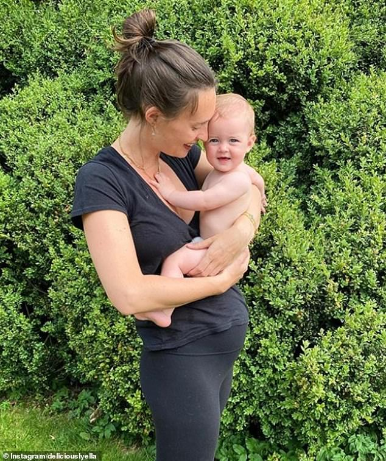
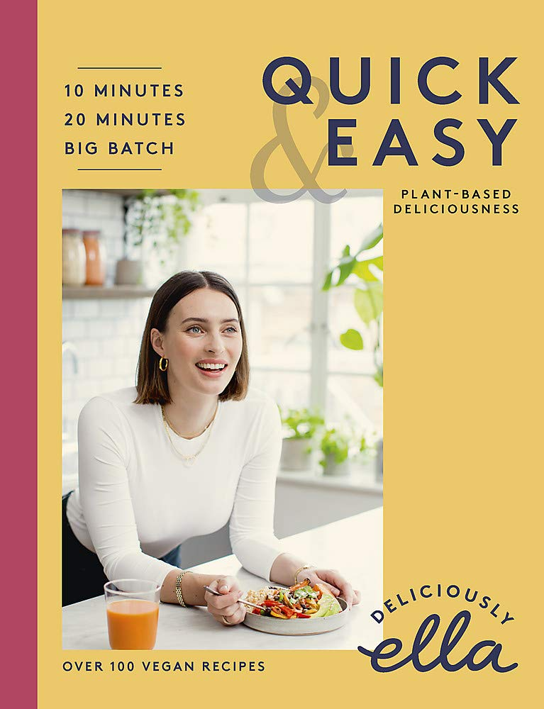

Healthy Eating
Deliciously Ella aims to make healthy eating feel less alienating
Monday 16th November 2020
 “I do think the conversation has become quite charged, quite loaded,” she says thoughtfully. “Even
the
word ‘wellness’ sometimes makes people think of weird and wacky things in LA, with shamans
and
cleanses. When you hear it, you don’t necessarily think of going for a walk and then making a bean
chilli, which feels more within your remit.
“I do think the conversation has become quite charged, quite loaded,” she says thoughtfully. “Even
the
word ‘wellness’ sometimes makes people think of weird and wacky things in LA, with shamans
and
cleanses. When you hear it, you don’t necessarily think of going for a walk and then making a bean
chilli, which feels more within your remit.“The wonderful and wacky make more interesting stories, which I so appreciate,” she adds, “but the reality is, I think in most people’s eyes, what we need is a meal that’s pretty easy to make and you can make a really big batch of, and then just chuck in the freezer.” With her latest cookbook, Deliciously Ella Quick & Easy, Mills wants to help make wellness healthy eating feel less alienating. And the fact it’s built around speedy recipes is no coincidence – she and her husband and business partner, Matt, welcomed her first child, Skye, last year.
The book may be all about ease – but it was born out of blood, sweat and tears. Mills is honest about her struggles writing it, saying frankly: “This cookbook has actually been on a personal and emotional level, the hardest project I’ve ever done. I went back to work with it four weeks after Skye was born, so I was pretty all over the shop at that point.
“She came onto the shoots with us and I had her in a sling and was feeding her on set – so I was breastfeeding and food styling at the same time.”
Mills loves the end result though, “because it really feels truly reflective of such an important time”.
 With a baby, another on the way, and a business to run, Mills has a new appreciation for how simple wellness should – and can – be. “It’s going on a walk or doing a five-minute meditation,” says the 29-year-old. “It’s not the big, expensive, complicated, time-consuming things, it’s the simple, everyday practices that you can have in your life to help you feel happier, calmer, healthier, more energised.”
She emphasises how cheap and easy things like chickpea stews and lentil daals can be, and her efforts to make recipes that are more accessible are admirable.
Still, some might struggle to shake their preconceptions of Mills as the granddaughter of Lord Sainsbury, and the fact her first book back in 2015 was seen as a big part of the widely-criticised ‘clean eating’ movement – something she has since distanced herself from.
The majority of the recipes in this book involve affordable, hearty ingredients – but this is still Deliciously Ella ; you can’t help but notice the odd thing many people probably wouldn’t be able to get at their local corner shop, like tapioca flour and tahini.
Food is obviously a big part of Mills’ ethos, but she’s started seeing it as just one part of a
bigger
picture. Each chapter in the new book
explores a different issue, whether it’s mental health or the
environment – wider interests which have been piqued by her podcast series interviewing various
experts.
“The way that we eat is so linked to so many other things,” Mills explains. “We too often look at
our
diet and the way we eat in isolation, and actually, I’m not sure that’s helpful to any of us. The
way we
live and the way we eat is so reflective, and often when people think about getting healthier and
making
a change in the way they’re eating, they go first and foremost to their diet. There’s nothing wrong
with
that, it’s what I did as well. But at the same time, there’s so much more to it. Broccoli is great,
but
broccoli isn’t the answer to everything.”
Instead, Mills says she’s interested in wellness (for lack of a better word) as a whole – how
your
mental health can affect your gut, the impact sleep has on your wellbeing, even analysing your
relationship to people and the world around you as a whole. “I think it’s increasingly
important to
look
at all of it in context, and not get too overly focused on one thing or another,” she says.
So, if you do want to have a healthier lifestyle, it’s worth looking at all aspects of it – not just
diet. Mills’ top piece of advice for making positive changes and sticking to them is finding
what
works for you. “Only you know what works for you,” she adds. “So much comes back to what you
actually enjoy, because nothing lasts if you don’t enjoy it. Nothing is sustainable for the long
term in your life if there’s no pleasure in it, and I think that’s the fundamental difference
between trying to eat well and taking care of yourself for the long-term, and a diet.”
On a personal level, Mills thinks “eating well is more important than it’s ever been before”, since
becoming a parent. “Because we want to cook with, and encourage our baby to enjoy home-cooked food
and make that a part of what she knows and what she does, but also to have the energy to juggle
7,000 things at any one day! The only way to do that consistently is to make it quick and easy – it
has to be genuinely doable on a day-to-day basis.”
So what else can you expect from her latest book? Deliciously Ella fans will see all her signatures
– comforting vegan food taking inspiration from a variety of cuisines, but with more of an emphasis
on batch-cooking and quick recipes.
Ultimately, Mills is looking to the future: “Our mental and physical health isn’t something we
want
for the next week. It’s something that we want for decades.”
Her book can be bought here: Quick and Easy - Deliciously Ella
Article from Wise Living magazine
Wrap up warm with a delicious autumnal soup

Treat yourself without feeling guilty, tuck in to guilt-free desserts

Christmas recipe inspiration!